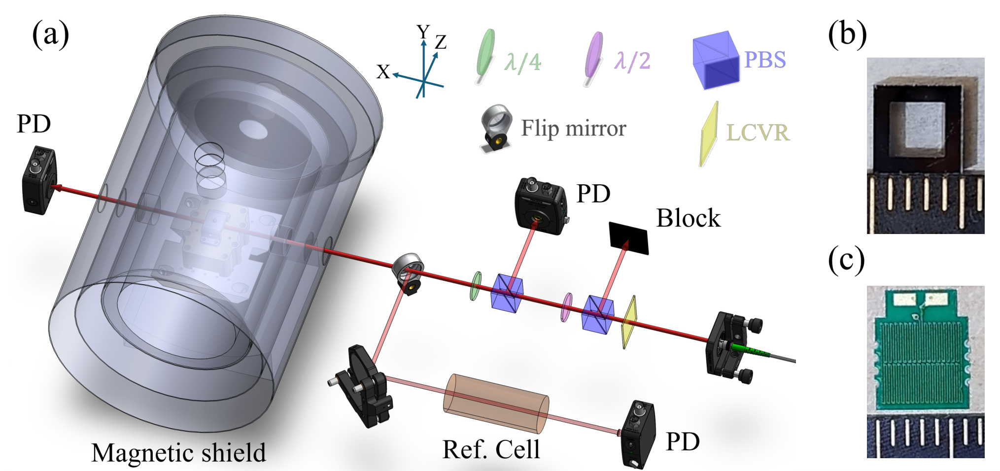
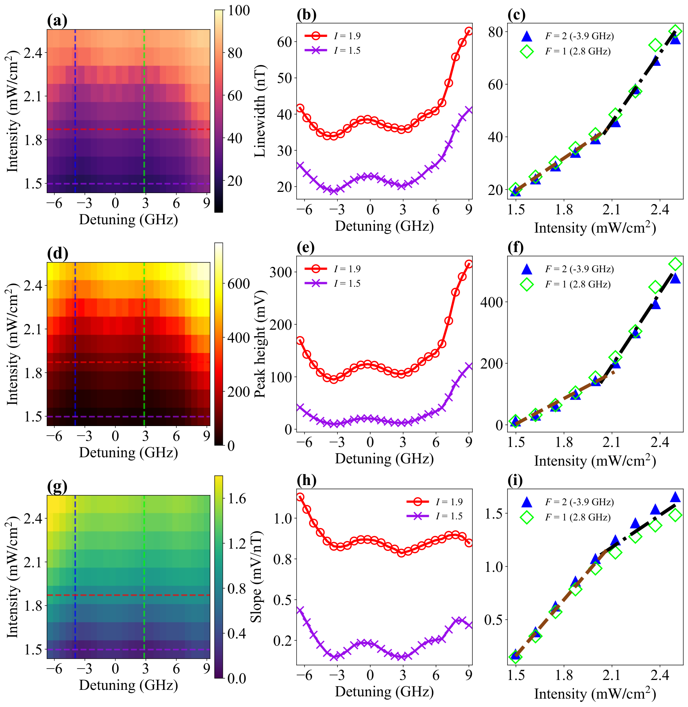
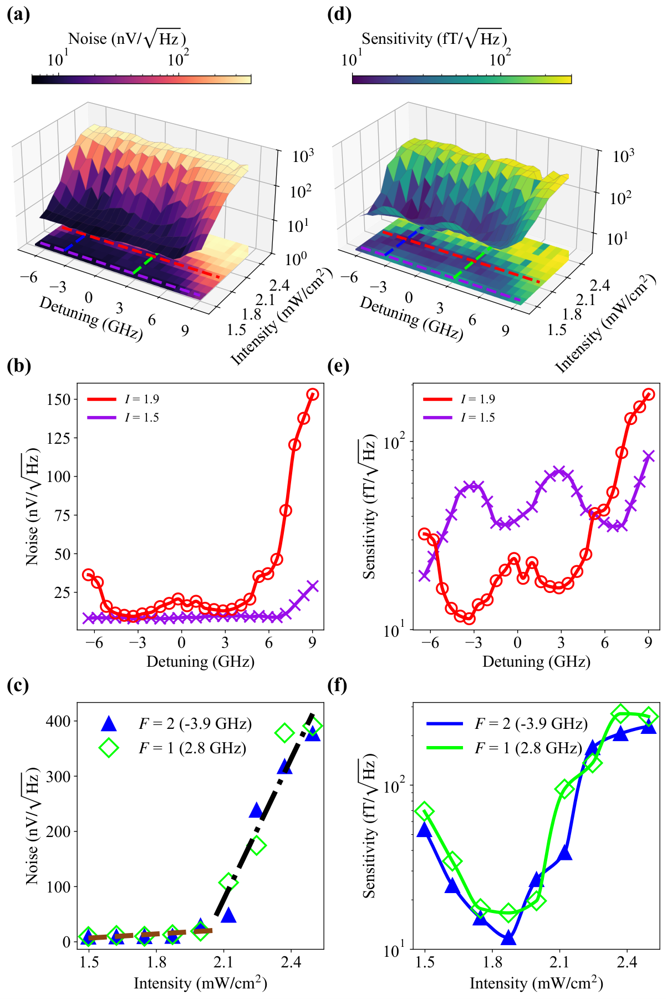
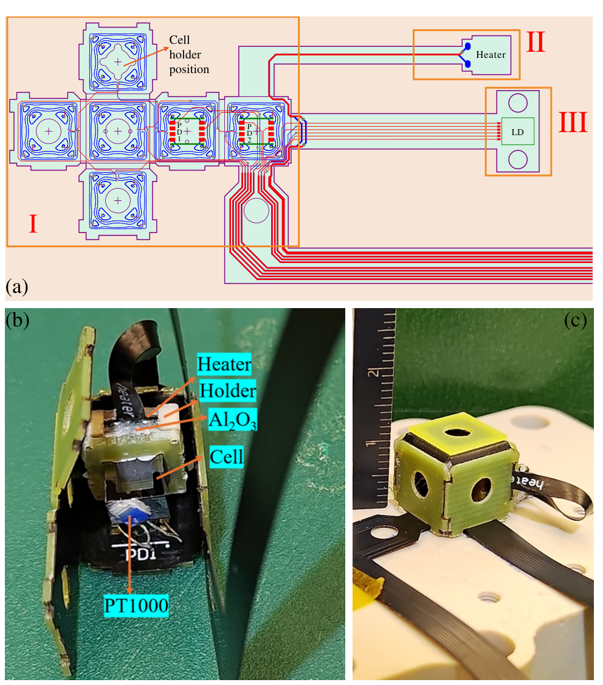
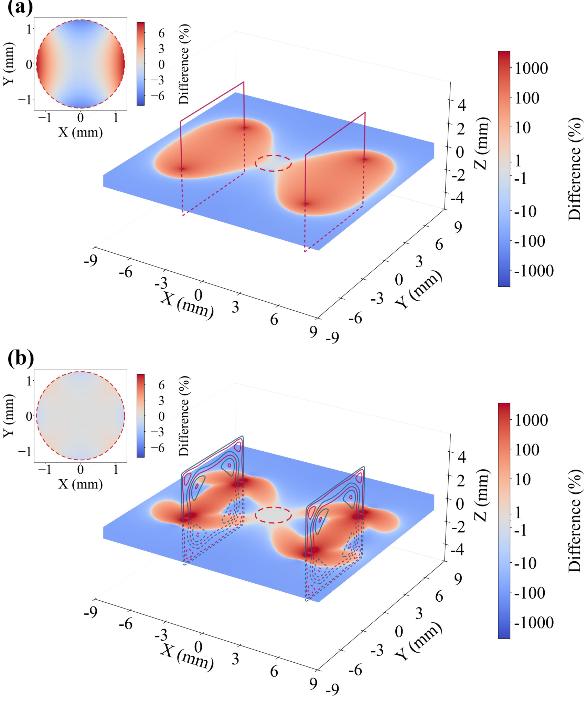
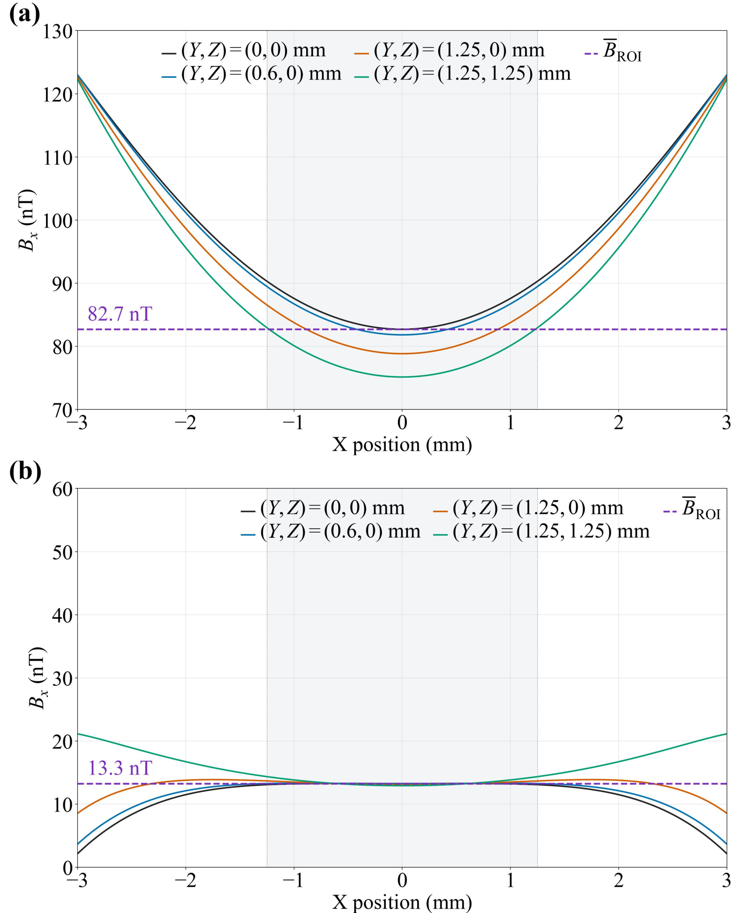

基于吸收检测的紧凑型单光束光泵磁力计
摘要
我们展示了一种紧凑型单光束光泵磁力计（OPM），采用充有500 Torr缓冲气体的纯87Rb微加工气室。通过–金属磁屏蔽与内部补偿线圈相结合，残余磁场被主动抑制到 pT以下。我们系统表征了OPM响应随激光失谐和光强的变化，并由信号斜率与噪声幅度谱密度推导出磁场灵敏度。在最佳光强下、共振跃迁附近获得了11 fT的最佳灵敏度，所用气室体积仅为0.027 cm3。 此外，利用折叠式柔性印刷电路板（FPCB）研制了小型化OPM原型，将气室、紧凑加热器和磁场线圈集成到立方体传感头中。研究了两种直接图形化在FPCB上的线圈构型。在优化工作条件下，OPM原型实现了66 fT的灵敏度。 这些结果表明，高缓冲气压单光束OPM能够实现优异灵敏度，为紧凑且可扩展的阵列铺平了道路。
索引词：
Optically pumped magnetometer (OPM), spin-exchange relaxation-free (SERF), gyromagnetic ratio, Larmor precession, zero-field resonance (ZFR)I 引言
高灵敏度磁测量在许多科学领域发挥着重要作用，包括物理学、生物学、神经科学、材料科学和地质学。低温超导量子干涉器件（SQUIDs）已用于要求最严苛的应用[1]，而原子磁强计的最新进展——目前已具备亚飞特斯拉灵敏度[2, 3, 4]——拓展了超灵敏磁场检测的潜力。与SQUIDs不同，光泵磁强计（OPMs）是基于广泛采用的泵浦-探测配置的全光学原子磁强计[2, 5]。它们具有热态运行、高空间分辨率和小型化潜力等关键优势。大多数OPMs使用钾（K）、铷（Rb）或铯（Cs）等碱金属原子，因为其具有强光学跃迁和适合光泵浦的超精细结构。氦-4（4He）也因其亚稳态三重态而被使用，而其惰性、高扩散速率和低自旋弛豫速率使其非常适合在高温或高场环境中工作[6, 7]。最近，具有反作用规避的压缩探测光可将自旋交换受限的OPMs的灵敏度提升到相干态极限之外[8, 9]。此外，深度神经网络可在简化的标量OPM装置中从光学旋转信号中提取完整的向量磁场信息，在保持高灵敏度的同时显著降低系统复杂度[10]。这些进展使基于OPM的脑磁图（OPM-MEG）以及其他生物医学传感与成像应用成为可能，可提供无创、高分辨率的磁场测量，并提高了实用性[11, 12, 13]。
原子磁力仪是最灵敏的磁场传感器之一，但其性能往往受到自旋交换碰撞的限制。然而，利用无自旋交换弛豫（SERF）技术可以克服这一限制 [14, 15, 16]。经过多年发展，SERF 磁力仪已实现亚 fT [3, 4] 的超高灵敏度。为抑制自旋交换弛豫并获得最佳磁场灵敏度，自旋交换速率必须远大于拉莫尔进动频率 [17, 18, 19]。这一条件要求高原子数密度和极低磁场，二者分别通过加热系统和磁屏蔽系统实现。综述文章 [20] 详细介绍了 SERF 磁力仪的发展，包括原子源、加热温度和磁场灵敏度。由于光泵磁力仪（OPM）的灵敏度本质上与原子气室的体积相关，较大体积通常能获得更高的信噪比（SNR），因此小型化工作必须谨慎权衡尺寸与性能 [21]。 值得注意的进展包括：采用微加工气室实现紧凑设计 [22]；利用单一椭圆偏振光的原子磁力仪实现了 7 fT [16] 的灵敏度；以及能够进行高灵敏度三轴磁场测量的单光束配置 [23]。参考文献 [24] 展示了一种便携式光学梯度仪，该梯度仪使用微加工碱金属气室，在无屏蔽的地球环境磁场中检测来自人脑和心脏的生物磁信号，并达到 16 fT 的灵敏度。
要在保持高灵敏度的同时实现紧凑型光泵磁力仪（OPM），抑制原子与器壁碰撞十分重要。缓冲气体提供了一种有效手段，可减缓原子向气室壁的扩散，从而降低壁致弛豫。本文采用高缓冲气压（500 Torr N2）的铷气室，并结合光吸收检测。 该模式使用单一圆偏振激光束同时完成光泵浦和探测，无需独立的泵浦光路、探测光路以及偏振选择探测元件。泵浦光场通过光泵浦使原子在各自旋态之间的布居重新分布，并将这种重新分布作为透射光强的变化进行检测。尽管光吸收模式的信噪比（SNR）通常低于光旋转模式，但其系统尺寸和复杂度显著降低。在本工作中，我们在优化光强和激光失谐条件下实现了11 fT的灵敏度，所用小型气室体积仅为0.027 cm3。 我们进一步开发了一种小型化OPM，利用折叠柔性印刷电路板（FPCB）将气室、紧凑加热器和磁场线圈集成到立方传感头中。 两种线圈构型——方形亥姆霍兹（SH）和双平面（BP）——直接图形化制作在FPCB上，并对其磁场均匀性及其对传感器性能的影响进行了研究。该原型使用台式光学组件和读出组件进行了表征。在优化工作条件下，该小型化OPM实现了66 fT的灵敏度，展示了基于FPCB的架构在紧凑型高灵敏度OPM中的应用潜力。
II 理论与方法
置于外磁场中的具有磁矩的原子会受到力矩作用，该力矩使其磁矩绕磁场方向以拉莫尔频率进动，其中为磁场强度， 为有效角旋磁比。通常引用的超精细态旋磁比对于和分别约为和。 在高温无自旋交换弛豫（SERF）区，快速的自旋交换碰撞使超精细能级组之间的自旋进动发生平均化，从而降低有效旋磁比并抑制自旋交换弛豫，进而压窄磁共振线宽[18]。 在光磁测量实验中，拉莫尔进动调制塞曼子能级间的布居分布，从而影响原子系综的光学响应。当偏振共振光与原子相互作用时，光泵浦将布居驱动至暗态。这些暗态的形成与稳定性对拉莫尔频率高度敏感，因而也对施加的磁场高度敏感。
II-A 磁共振线宽与灵敏度
通过扫描磁场并监测光透射的变化，可以观察到中心位于零场附近的磁共振特征，如图 1 所示。该磁共振的全宽 通过旋磁比与横向自旋极化的有效退相干时间 相关联，
| (1) |
光泵磁力计（OPM）的工作依赖若干关键物理过程，包括光泵浦、拉莫尔进动、自旋弛豫和光学检测。圆偏振激光束选择性地将原子激发到偏好自旋取向，沿光轴产生净自旋极化。在外部磁场 存在时，集体自旋极化绕磁场方向以拉莫尔频率进动。 自旋极化因多种机制共同作用而弛豫，包括自旋交换碰撞与自旋破坏碰撞、磁场不均匀性、壁碰撞以及光泵浦本身。 自旋相干时间通常表示为 ，其中 为光泵浦速率，与光强成正比，而 表示无光条件下的横向自旋弛豫时间，包括与 Rb 及缓冲气体 N2 原子的自旋破坏碰撞和扩散弛豫 [16]。 自旋取向的变化通过泵浦光或分离探测光束的吸收或透射进行光学读出 [16, 20]。在零场共振（ZFR）区，透射信号与自旋极化的 分量成正比，该分量通常由 [21] 描述，
| (2) |
其中 表示共振信号幅度，半高全宽（FWHM）为 ，如式 (1) 所示。 该洛伦兹线型反映了原子系综对横向磁场的相干自旋响应。随着 从零增大，自旋极化因拉莫尔进动而逐渐退相，使透射信号降低。 共振线宽 与自旋相干时间 密切相关，线宽越窄，对应自旋极化寿命越长，磁测量灵敏度越高。提高光泵浦速率（通常通过提高光强）会增加原子自旋极化，从而提高光学信号对比度。然而，当泵浦速率过大时，光致弛豫和功率展宽会缩短 ，导致磁共振变宽、灵敏度下降。因此，存在一个最佳泵浦速率，可在增强自旋极化和信号对比度与线宽展宽之间取得平衡。
在无自旋交换弛豫（SERF）机制下，碱金属原子间的自旋交换碰撞速率 远大于拉莫尔进动频率（）[14, 15, 17, 16]。快速的自旋交换相互作用不断混合超精细态，从而有效对不同超精细能级组进行平均。 因此，自旋交换弛豫被强烈抑制，其对磁共振线宽的贡献随之降低；同时，快速自旋平均使得零场共振变得极窄。
光泵磁力计（OPM）的磁场灵敏度量化了在给定测量带宽内可检测到的最小磁场变化。实际中，施加小幅振荡磁场以调制自旋进动，并使用锁相放大器（LIA）解调透射信号。这种调制与解调方案提取磁共振的色散导数。灵敏度随后由检测信号的噪声水平和该色散信号的斜率共同决定，通常表示为
| (3) |
其中 表示检测信号的均方根（RMS）噪声， 是信号相对于磁场的斜率。 噪声 通常在频域中使用快速傅里叶变换（FFT）表征，从而使灵敏度能够以 fT 为单位表示。 斜率 通常在磁共振线性区域附近评估，此时对小磁场变化的响应最大。通过结合测得的噪声谱密度和共振斜率，可获得 OPM 的灵敏度谱，从而定量评估传感器在不同工作条件下的性能。
II-B 零场共振
在零场光吸收配置中，存在通常为数十 nT 量级的弱横向磁场时，探测光束透射相对于零场共振会降低，如图 1 所示。这种行为可以从光泵浦和暗态形成的角度理解。在零磁场下，原子子能级保持简并，使圆偏振 光能够将原子光泵浦至暗态。 横向磁场会诱导拉莫尔进动，混合自旋态并破坏暗态形成，从而降低透射探测光强。 量子化轴由沿 轴的磁场方向定义，该轴与沿 轴的光传播方向正交。在该基下，入射圆偏振被分解为多个分量，这些分量耦合不同的塞曼子能级。这破坏了向暗态的有效光泵浦，导致吸收增强。即使 pT 或 fT 量级的磁场也可通过监测透射来检测。 弱横向磁场下的吸收增强主要归因于相干暗态形成，而 D1 跃迁有利于该过程。与 D2 跃迁不同，D1 跃迁缺乏闭合循环跃迁，使原子能够更有效地被光泵浦到基态磁子能级的相干叠加态中，这些叠加态与光场解耦并形成暗态。

II-C 缓冲气室中的零场共振
III 实验装置
III-A 原子系统与磁环境
实验装置由磁屏蔽罩、加热系统、激光源以及数据采集与分析系统组成，如图 2 所示。本工作使用的玻璃气室是由 Twinleaf 制造的微加工气室，外部尺寸为，内部尺寸为。其中含有纯，并充有 500 Torr 的缓冲气体。该气室采用非磁性聚醚醚酮（PEEK）固定件安装，并置于四层磁屏蔽罩（Twinleaf：MS-1LF）内，该屏蔽罩由三层金属层和一层铁氧体层组成。屏蔽罩配备三对内部补偿线圈。测量期间，利用这些线圈施加扫描直流磁场和交流调制磁场。 在数字消磁单元（Twinleaf：DG-10）的驱动下，残余磁场被主动抑制到 400 pT 以下，并由商用零场磁力计（QuSpin：QZFM Gen-3）验证。
然而，若干因素会引入不需要的磁场，例如加热元件和温度传感器。气室温度维持在437 K，对应原子密度2.0 cm-3，所用加热器印刷在150 m厚的氢氧化物填充陶瓷PCB上，如图 2(c) 所示。 采用紫外固化胶将非磁性镀银电阻温度检测器（RTD，PT1000）粘贴在气室侧面，作为在现场可编程门阵列（FPGA）上实现的比例积分（PI）温度控制器的反馈传感器，该控制器调节加热器驱动功率。温度稳定性为0.05∘C。加热器采用双面反向走线电路设计以抵消磁场。它由基于FPGA和H桥电路的自制电路驱动，产生351 kHz的高频交流电流，比检测频带（DC–100 Hz）高出三个数量级以上。选择该频率是为了兼顾热效率与磁噪声抑制，在时域和空间域上最小化电流引起的磁干扰[16, 27, 28, 29] 。 为降低工作加热器产生的残余磁场（加热器表面处6 nT），在加热器与气室之间放置1.5 mm厚的Al2O3衬底。该配置将穿过光束的磁场抑制到约2 nT。
III-B 激光功率稳定与磁场调制
探测光束由分布式布拉格反射激光器（DBR，Thorlabs：DBR795PN）产生，调谐至87Rb的D1跃迁（795 nm），并耦合进保偏（PM）光纤。其直径为2.6 mm，增大了相互作用体积以及气室中极化的87Rb原子比例。为稳定入射到气室的光功率，采用由自制的液晶可变延迟器（LCVR，作为可变二分之一波片（）工作）和偏振分束器（PBS）组成的反馈环路。 此外，在第二个PBS前放置一个固定的，以调节偏振，使入射光束分成透射分量和反射分量相等的两部分。反射光束由光电探测器（PD；Thorlabs：PDA36A2）监测，从而提供入射到气室的光功率的校准测量值。将PD信号与预定义设定点比较以生成误差信号，该信号被反馈到LCVR。通过调节偏振旋转角，LCVR稳定经PBS透射向气室的光功率。 使用四分之一波片（）在探测光束进入气室前将其转换为圆偏振。充有天然Rb原子的参考气室用作频率参考。实验中，探测激光器频率在17 GHz的总范围内扫描过Rb D1跃迁。对于光泵磁力仪（OPM）磁谱测量，入射到气室的光强在1.5 2.5 mW/cm2之间变化。
在采集磁共振曲线之前，消磁后使残差磁场最小化，并使用亥姆霍兹线圈产生扫描直流磁场和调制交流磁场。 交流磁场由锁相放大器（LIA；Zurich Instruments：MFLI）驱动，在997 Hz下调制。 直流磁场使用同一LIA以0.1 Hz扫描，校准的磁场转换因子为2.9 nT/mV，该因子由磁力仪QZFM Gen-3确定。 透射探测信号由光电探测器（PD）检测并送入LIA。信号在调制频率处解调，随后经过截止频率为100 Hz的低通滤波器，以进行连续数据采集。测得的零场共振和色散曲线如图 1所示。
IV 结果与讨论
IV-A 缓冲气体气室中的透射光谱
典型透射光谱如图 3所示。对于85Rb和87Rb同位素，参考气室的透射光谱呈现出与超精细基态对应的清晰可分辨凹陷。如黑线所示，中心两个较深凹陷归因于85Rb，而两个光谱翼上较浅的凹陷对应于来自和基态的87Rb超精细跃迁。激发态的超精细分裂大于多普勒线宽，因此这些跃迁线仍能很好地分辨。我们相对于跃迁定义零失谐。该光谱作为频率参考，用于在整个测量过程中校准探测激光器的失谐。
对于与500 Torr N2缓冲气体混合的纯87Rb，强压力展宽将吸收线合并为一个显著展宽的单一谱线轮廓[30, 31]。缓冲气体还引起压力频移，通常导致几GHz的红移。这种展宽且更平滑的吸收光谱可提高光学磁力测量的稳定性。此外，所涉及的超精细跃迁具有不同的跃迁强度，对光谱的贡献不同，并形成具有特征性的双特征透射轮廓。
此外，透射光谱依赖于光强。随着光强增加，例如 11 mW/cm2 处的红色曲线， 基态在 GHz 附近表现出比 4 GHz 附近的 基态更深的吸收。随着光强降低，功率展宽和光泵浦效率对两个跃迁的相对贡献不同，从而导致不同的共振响应。 谱深度反映光泵浦速率，而提高该速率会同时增强原子自旋偏振和弛豫速率。 理解这种双重特征以及依赖光强的演化，对于优化零场 OPM 运行很重要。 理论上， 和 超精细跃迁具有不同的饱和光强和功率展宽行为，这意味着对每个基态的光泵浦可能产生不相等的响应，因为光泵浦速率、自旋偏振的形成以及弛豫过程均取决于跃迁和光强。
IV-B 激光器光强与失谐对光谱特征的影响

磁场灵敏度定义为。必须优化泵浦速率，以在改善的自旋极化和信号对比度与随之而来的线宽展宽之间取得平衡。我们首先关注磁共振响应，以考察光强和激光失谐如何影响其关键特性，包括零场共振的线宽和峰高以及差分信号的斜率。 通过对激光光强和失谐影响的系统研究，我们在图 4中给出了我们的光泵磁力仪（OPM）的特性。 如图 4(a)所示，提取的线宽（半高全宽，FWHM）在约-3.9和2.8 GHz的失谐处相对较窄。 我们进一步提取了两个代表性光强（1.5和1.9 mW/cm2）下的测量结果，并在图 4(b)中给出。 两种光强下均表现出双结构响应。 此外，图 4(c)表明线宽随光强增加而增大。如第II-A节所讨论，和。 在我们的实验条件下，光泵浦速率，即横向自旋弛豫时间的倒数。 在足够高的光强（ mW/cm2）下，探测光束不再被完全吸收，磁共振线宽近似与光强成正比，如棕色虚线引导线所示。 进一步增大光强会引发功率展宽，导致线宽出现更陡的线性增加，如黑色点划线所示。
类似地，提取零场共振峰高和差分斜率作为激光光强和失谐的函数，如图 4(d)–4(i)所示。 峰高随失谐的变化关系如图 4(e)所示。在两种光强下，峰高在两个共振区域附近均表现出明显的双结构响应。随着光强增大，整体峰高变大，而双结构特征仍然可见。 图 4(f)中峰高随光强的变化也可分为两个区间。在低光强下，探测光束在穿过原子蒸气传播时被强烈吸收，只有很小一部分光束能够透射过原子系综。我们通过CCD相机采集的荧光信号直接观察到了这一行为。在采用泵浦-探测配置的先前研究中，也报道了类似效应；这些研究测量了沿激光束方向的自旋极化分布[27, 32]。激光光强的衰减由下式给出
| (4) |
其中 是原子密度， 是吸收截面， 是作为原子位置 函数的自旋偏振。 因此，检测信号随入射光强缓慢增加，导致峰高相对较弱地增加。 高于某一阈值光强（ mW/cm2）时，吸收变得饱和，探测光束不再被完全吸收。 随着光强增加，光泵浦变得更加显著，导致更强的原子偏振以及峰高相应地更陡增加。
微分斜率通过带磁场调制的锁相放大器提取。斜率的失谐依赖关系表现出类似的双结构响应，表明这三个量受相同的底层共振特征支配。这里我们关注光强如何改变斜率，如图 4(i) 所示。 由于斜率与峰高和线宽之比有关，其光强依赖关系遵循上述相同的双区间行为。在本次测量中，斜率通常随光强增加，这是有利的，因为斜率出现在磁场灵敏度的分母中。然而，灵敏度还由分子中的噪声水平决定。因此，尽管增加光强会提高微分斜率，总灵敏度仍取决于噪声水平，接下来必须考察其光强依赖关系。
IV-C 灵敏度

现在我们转向噪声项 ，它表示检测信号中涨落的幅度，并在确定灵敏度方面起重要作用。 低光强导致光泵浦不足和信号微弱，而高光强会引起功率展宽和噪声增加。 按照图 4 中的分析，我们通过计入测量噪声进一步评估灵敏度。 噪声密度和相应灵敏度作为光强和激光失谐的函数展示于图 5 中。
对于噪声测量，随后停止磁场扫描，并记录锁相放大器（LIA）的解调输出。时域信号的幅度谱密度（ASD）采用 Welch 方法计算，使用 Hann 窗和 50% 重叠。通过对 3–80 Hz 频率范围内的 ASD 取平均，得到噪声密度 。 随后将 OPM 灵敏度计算为 。
在低光强下，测量的噪声幅度谱密度（ASD）几乎对激光失谐和光强均不敏感，如图 5(b) 和 5(c) 所示。 然而，随着光强增大，依赖于失谐的噪声谱中出现双结构特征，同时较高光强下噪声急剧上升。 特别是，当光强增大到接近 2.0 mW/cm2 的拐点以上时，噪声迅速增加。这一行为表明，在高光强区域，额外的光强相关噪声机制变得显著。
V 小型化传感器原型
上一节介绍了台式光泵磁力仪（OPM）系统，并系统表征了磁场灵敏度如何依赖激光失谐和光强。基于这些结果，我们研制了一种小型化传感器原型，以评估将单光束吸收模式 OPM 集成到紧凑型传感器探头中的可行性。这里，我们介绍该小型化传感器的结构及其相对于台式系统的性能。

V-A 集成传感器架构与实验配置
微型化传感器原型的设计与组装如图 6 所示。定制 FPCB 分为三个主要功能区：主传感区（标记为 I）、加热区（II）和激光集成区（III）。 主传感区（I）容纳气室和磁场线圈。它还为温度传感器和 PDs 提供电气接口；PDs 预留用于未来集成，本工作未使用。 加热区（II）为气室提供温控，而预留的激光集成区（III）包含激光二极管的电气接口。图 6(b) 展示了部分组装的传感头。 六块由 FR-5 玻璃纤维增强环氧树脂层压板制成的支撑板已固定在 FPCB 背面，以提供机械支撑并限定折叠后传感头的几何形状。 一个边长为 5.5 mm 的紧凑方形加热器（台式系统所用加热器的边长为 6.5 mm）安装在气室支架中。 使用紫外固化胶将微加工气室和气室支架固定到周围的 FPCB 上。 组装后，将传感区折叠成紧凑的传感头，如图 6(c) 所示，每侧外部尺寸为 。
为表征微型化传感器原型，光学激发和检测采用与台式装置相同的 DBR 激光器、偏振光学元件、PD 以及用于锁相放大和数据采集的电子设备进行。 微型化亥姆霍兹线圈直接设计并图形化于 FPCB 上。 光学相互作用体积内的磁场梯度会显著降低传感器性能。通过减小激光束直径可部分抑制这一效应，从而将相互作用区域限制在磁场更均匀的中心区域。 然而，根据 OPM 的灵敏度标度关系，最小可测磁场可表示为 [21]
| (5) |
其中 是光学相互作用体积， 是测量时间。灵敏度极限受参与测量的原子数强烈影响，而该原子数与 成正比。减小光束尺寸会减少对光–原子相互作用有贡献的原子数，从而抬高基本灵敏度极限。 因此，可通过设计具有均匀磁场的更大区域来增大相互作用体积。
V-B 面向集成传感器设计的磁场线圈
为评估集成线圈几何结构对性能的影响，对两种线圈配置进行了仿真和实验研究。 第一种配置称为方形亥姆霍兹（SH）配置，使用在柔性印制电路板（FPCB）上图形化的圆角方形亥姆霍兹线圈。第二种配置称为双平面（BP）配置，使用集成双平面线圈。 在两种配置中，集成线圈提供了剩余磁场补偿、直流磁场扫描和交流调制所需的全部磁场。 对磁场分布进行仿真，以评估线圈几何结构对均匀场区域的影响，如图 7 所示。线圈电流设置为 。 感兴趣区域（ROI）定义为以气室为中心、直径为 的球形体积。磁场差异比 定义为
| (6) |
其中 是局部磁场大小， 是 ROI 内的平均磁场大小。


V-C 性能及与台式系统的比较
随后对两种小型化线圈配置的性能进行了实验评估。对于 SH 配置，均匀场区域有限，因此需要将激光束直径减小至 。经优化后，SH 配置获得的最佳磁场灵敏度为 。 对于 BP 设计，激光束可增大至 ，与台式系统中所用光束相同。 在优化的工作条件下，BP 配置实现了 的灵敏度。 即使减小了光束尺寸，SH 配置被照体积内的磁场均匀性仍低于 BP 线圈所提供的均匀性。由此产生的磁场梯度会引入额外的非均匀展宽，并降低共振斜率。这些结果表明，增大均匀场体积对于在小型化气室光泵磁力仪（OPM）中保持高灵敏度尤为重要。
在确定 BP 配置为首选设计后，我们将其灵敏度谱与图 9 中台式系统的灵敏度谱进行比较。灵敏度在 3 至 80 Hz 的频率范围内评估，如阴影区域所示。为避免高估宽带灵敏度水平，该范围内显著的窄带干扰峰未纳入平均过程。灵敏度为 ，相当于微型化后灵敏度劣化为原来的 1/6。BP 配置在大部分评估频带内表现出总体更高的磁场等效噪声水平。其噪声水平约为台式系统的四倍，且在低于 的频率处尤其升高。这种低频噪声升高预计主要与微型化传感器中改进的加热结构有关。两个频谱还包含若干窄带谱峰，其中包括 附近的一个显著分量，这些谱峰主要与窄带环境或电学干扰有关。剩余的灵敏度劣化主要归因于磁共振展宽。BP 配置的共振线宽比台式系统宽 50%，这与 BP 线圈的残差场梯度一致，而该梯度大于台式系统所用屏蔽线圈的残差场梯度。还观察到共振线型有轻微畸变，进一步证明空间磁场不均匀性。
V-D 展望
未来开发将聚焦于将光学与检测组件进一步集成到基于 FPCB 的传感器平台中，包括将光电探测器（PD）和光源直接纳入传感器头。由于气室的工作温度最高可达 ，而 PD 将仅相距几毫米，局部温度升高可能增加探测器热噪声并降低信噪比。此外，光源将替换为未封装的垂直腔面发射激光器（VCSEL），以进一步实现微型化。尽管高缓冲气体压强和高气室温度会使吸收谱显著展宽，但在评估磁强计性能时仍应考虑 的宽激光线宽的影响。此外，微型化 VCSEL 系统可能导致更大的光强波动，并因此增加磁强计的光学噪声。
集成磁场线圈还可以进一步优化。根据仿真结果，将单电流配置替换为双电流设计，并适当调节电流幅值和方向，可进一步提高磁场均匀性。采用优化后的电流分布，ROI内的磁场差异比可降至以下，为进一步提高全集成传感器的灵敏度提供了潜在途径。
VI 结论
我们开发了一套紧凑型光泵磁力仪（OPM）系统，该系统由激光源、含纯87Rb且充有500 Torr N2缓冲气体的微加工气室、四层磁屏蔽以及用于控制磁场的亥姆霍兹线圈组成。系统以吸收模式工作，采用单圆偏振光束。通过分析信号斜率和噪声谱，推导出磁场灵敏度。我们系统研究了灵敏度对激光失谐和光强的依赖关系，揭示了峰高增强与噪声增加之间的权衡。在气室体积为0.027 cm3时，实现了11 fT的最佳灵敏度。 此外，我们采用折叠式柔性印制电路板（FPCB）开发了一种小型化OPM原型，将气室、加热器和磁场线圈集成到边长12 mm的立方体传感头中。在所研究的两种线圈配置中，BP设计提供了改善的磁场均匀性，并实现了66 fT的灵敏度。相对于台式系统的剩余性能差距，凸显了进一步降低光相互作用区域内磁场梯度的重要性。未来工作将聚焦于将光源和光电探测器集成到基于FPCB的平台中，以实现全集成传感器。 这种紧凑装置可实现低噪声磁场检测，并为适用于生物医学和便携式应用的小型化多轴OPM提供了有前景的平台。 热原子系综的使用进一步支持其集成到芯片级传感器平台中。
References
- [1] (2006) Superconducting quantum interference device instruments and applications. Review of Scientific Instruments 77 (10), pp. 101101. External Links: ISSN 0034-6748, Document, https://pubs.aip.org/aip/rsi/article-pdf/doi/10.1063/1.2354545/11171638/101101_1_online.pdf Cited by: §I.
- [2] (2003) A subfemtotesla multichannel atomic magnetometer. Nature 422 (6932), pp. 596–599. External Links: ISSN 1476-4687, Document Cited by: §I.
- [3] (2010) Ultrahigh sensitivity magnetic field and magnetization measurements with an atomic magnetometer. Applied Physics Letters 97 (15), pp. 151110. Cited by: §I, §I.
- [4] (2010) Quantum Noise Limited and Entanglement-Assisted Magnetometry. Phys. Rev. Lett. 104, pp. 133601. External Links: Document Cited by: §I, §I.
- [5] (2010) High Bandwidth Atomic Magnetometery with Continuous Quantum Nondemolition Measurements. Phys. Rev. Lett. 104, pp. 013601. External Links: Document Cited by: §I.
- [6] (2021) A 4He vector zero-field optically pumped magnetometer operated in the Earth-field. Review of Scientific Instruments 92 (10), pp. 105005. External Links: ISSN 0034-6748, Document Cited by: §I.
- [7] (2021) Helium-4 magnetometers for room-temperature biomedical imaging: toward collective operation and photon-noise limited sensitivity. Opt. Express 29 (10), pp. 14467–14475. External Links: Document Cited by: §I.
- [8] (2021) Squeezed-Light Enhancement and Backaction Evasion in a High Sensitivity Optically Pumped Magnetometer. Phys. Rev. Lett. 127, pp. 193601. External Links: Document Cited by: §I.
- [9] (2023) Quantum-Enhanced Magnetometry at Optimal Number Density. Phys. Rev. Lett. 131, pp. 133602. External Links: Document Cited by: §I.
- [10] (2023) Machine learning assisted vector atomic magnetometry. Nature Communications 14 (1), pp. 6105. External Links: ISSN 2041-1723, Document Cited by: §I.
- [11] (2017) A 20-channel magnetoencephalography system based on optically pumped magnetometers. Physics in Medicine Biology 62 (23), pp. 8909. External Links: Document Cited by: §I.
- [12] (2022) A 90-channel triaxial magnetoencephalography system using optically pumped magnetometers. Annals of the New York Academy of Sciences 1517 (1), pp. 107–124. External Links: Document Cited by: §I.
- [13] (2023) Quantum sensors for biomedical applications. Nature Reviews Physics 5 (3), pp. 157–169. External Links: ISSN 2522-5820, Document Cited by: §I.
- [14] (2002) High-Sensitivity Atomic Magnetometer Unaffected by Spin-Exchange Relaxation. Phys. Rev. Lett. 89, pp. 130801. External Links: Document Cited by: §I, §II-A.
- [15] (2005) Effects of spin-exchange collisions in a high-density alkali-metal vapor in low magnetic fields. Phys. Rev. A 71, pp. 023405. External Links: Document Cited by: §I, §II-A.
- [16] (2009) Spin-exchange relaxation-free magnetometry using elliptically polarized light. Phys. Rev. A 80, pp. 013416. External Links: Document Cited by: §I, §II-A, §II-A, §III-A.
- [17] (2008) Spin-exchange-relaxation-free magnetometry with Cs vapor. Phys. Rev. A 77, pp. 033408. External Links: Document Cited by: §I, §II-A.
- [18] (2019) A Fast Identification on the Spin-Exchange Relaxation-Free Regime of Atomic Magnetometer Exploiting Measurement on Gyromagnetic Ratio. IEEE Transactions on Instrumentation and Measurement 68 (4), pp. 1157–1164. External Links: Document Cited by: §I, §II.
- [19] (2021) Examination of Spin-Exchange Relaxation in the Alkali Metal-Noble Gas Comagnetometer With a Large Electron Magnetic Field. IEEE Transactions on Instrumentation and Measurement 70 (), pp. 1–8. External Links: Document Cited by: §I.
- [20] (2018) SERF Atomic Magnetometer–Recent Advances and Applications: A Review. IEEE Sensors Journal 18 (20), pp. 8198–8207. External Links: Document Cited by: §I, §II-A.
- [21] (2019) Optically pumped magnetometers: From quantum origins to multi-channel magnetoencephalography. NeuroImage 199, pp. 598–608. External Links: ISSN 1053-8119, Document Cited by: §I, §II-A, §V-A.
- [22] (2007) Subpicotesla atomic magnetometry with a microfabricated vapour cell. Nature Photonics 1 (11), pp. 649–652. External Links: ISSN 1749-4893, Document Cited by: §I.
- [23] (2021) High-sensitivity operation of a single-beam atomic magnetometer for three-axis magnetic field measurement. Opt. Express 29 (10), pp. 15641–15652. External Links: Document Cited by: §I.
- [24] (2020) Portable Magnetometry for Detection of Biomagnetism in Ambient Environments. Phys. Rev. Appl. 14, pp. 011002. External Links: Document Cited by: §I.
- [25] (1973) Spin-Exchange Shift and Narrowing of Magnetic Resonance Lines in Optically Pumped Alkali Vapors. Phys. Rev. Lett. 31, pp. 273–276. External Links: Document Cited by: §II-C.
- [26] (2022) Optimized gas pressure of an Rb vapor cell in a single-beam SERF magnetometer. Opt. Express 30 (1), pp. 336–348. External Links: Document Cited by: §II-C.
- [27] (2016) Four-Channel Optically Pumped Atomic Magnetometer for Magnetoencephalography. Optics Express 24 (14), pp. 15403–15416. External Links: Document Cited by: §III-A, §IV-B.
- [28] (2020) In-Situ Measurement of Electrical-Heating-Induced Magnetic Field for an Atomic Magnetometer. Sensors 20 (7), pp. 1826. External Links: Document Cited by: §III-A.
- [29] (2021) Indium Tin Oxide Non-Magnetic Heating Film for Miniaturized SERF Gradient Magnetometer. IEEE Sensors Journal 21 (15), pp. 16554–16559. External Links: Document Cited by: §III-A.
- [30] (2019) Broadening and shifting of Rb D1 and D2 line in low pressure vapor cell. Optik 183, pp. 751–756. External Links: ISSN 0030-4026, Document Cited by: §IV-A.
- [31] (2024) Optimizing longitudinal spin relaxation in miniaturized optically pumped magnetometers. Phys. Rev. Appl. 22, pp. 064024. External Links: Document Cited by: §IV-A.
- [32] (2020) Determination of Spin Polarization in Spin-Exchange Relaxation-Free Atomic Magnetometer Using Transient Response. IEEE Transactions on Instrumentation and Measurement 69 (3), pp. 845–852. External Links: Document, ISSN 1557-9662 Cited by: §IV-B.